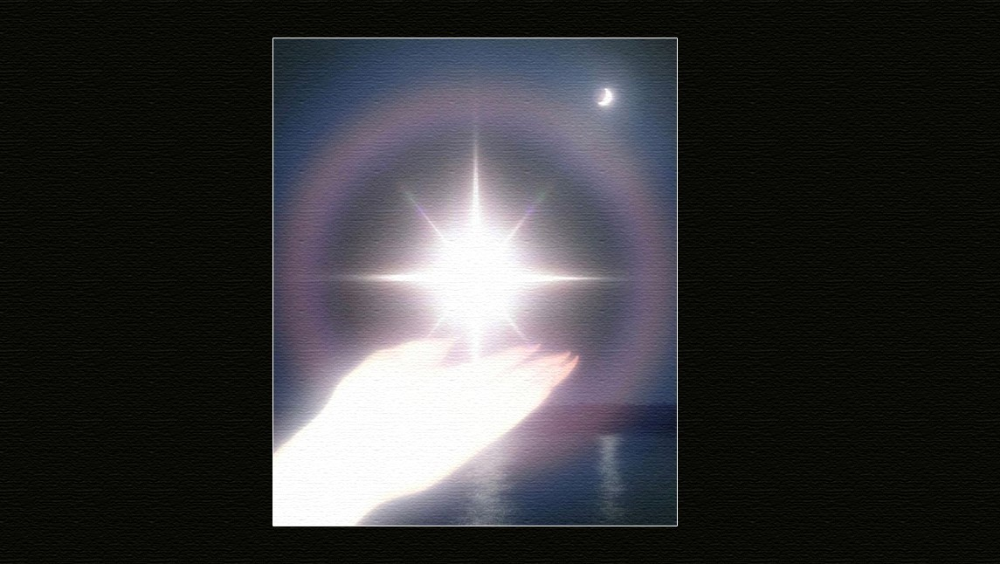

La única manera de acabar con la ilusión es aprender a explorar el interior de uno mismo, y experimentar la realidad de nuestra propia estructura física y mental. Esto es lo que Siddhartha Gotama hizo para llegar a ser un Buddha.
Dejando a un lado toda idea preconcebida, se examinó para descubrir la verdadera naturaleza de la estructura física y mental. Comenzando desde el nivel superficial, el de la realidad aparente, penetró hasta el nivel más sutil, y descubrió que toda la estructura física, todo el mundo material, está compuesto de partículas subatómicas, llamadas Päli attha kalapa.
Siddhartha Gotama descubrió que cada una de estas partículas consta de cuatro elementos (tierra, agua, fuego y aire) y de sus características correspondientes. Descubrió que estas partículas son los pilares básicos de la estructura de la materia, y que están surgiendo y desapareciendo constantemente, con gran rapidez, trillones de veces por segundo. En realidad no existe solidez en el mundo material; este no es más que combustión y vibraciones.
Los científicos modernos han confirmado los descubrimientos del Buddha y han probado experimentalmente que todo el universo material está compuesto por partículas subatómicas que surgen y desaparecen rápidamente. Sin embargo, esto no ha liberado a los científicos del sufrimiento, porque su sabiduría es solo intelectual. A diferencia del Buddha, no han experimentado la verdad directamente dentro de ellos mismos. Solo cuando uno experimenta personalmente la realidad de la propia permanencia, empieza a salir de la desdicha.